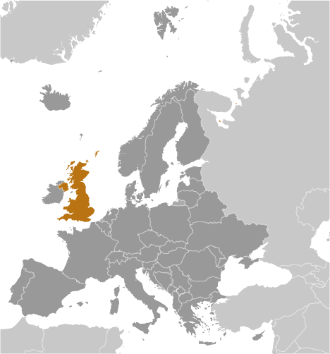

| Page last updated on September 24, 2015 |

|
 |
|
|
|
|
|
Introduction :: UNITED KINGDOM -
The United Kingdom has historically played a leading role in developing parliamentary democracy and in advancing literature and science. At its zenith in the 19th century, the British Empire stretched over one-fourth of the earth's surface. The first half of the 20th century saw the UK's strength seriously depleted in two world wars and the Irish Republic's withdrawal from the union. The second half witnessed the dismantling of the Empire and the UK rebuilding itself into a modern and prosperous European nation. As one of five permanent members of the UN Security Council and a founding member of NATO and the Commonwealth, the UK pursues a global approach to foreign policy. The UK is also an active member of the EU, although it chose to remain outside the Economic and Monetary Union. The Scottish Parliament, the National Assembly for Wales, and the Northern Ireland Assembly were established in 1999. The latter was suspended until May 2007 due to wrangling over the peace process, but devolution was fully completed in March 2010.
Geography :: UNITED KINGDOM -
Western Europe, islands - including the northern one-sixth of the island of Ireland - between the North Atlantic Ocean and the North Sea; northwest of France
54 00 N, 2 00 W
Europe
total: 243,610 sq km
land: 241,930 sq km
water: 1,680 sq km
note: includes Rockall and Shetland Islands
country comparison to the world: 80
twice the size of Pennsylvania; slightly smaller than Oregon
Area comparison map:

total: 443 km
border countries (1): Ireland 443 km
12,429 km
territorial sea: 12 nm
exclusive fishing zone: 200 nm
continental shelf: as defined in continental shelf orders or in accordance with agreed upon boundaries
temperate; moderated by prevailing southwest winds over the North Atlantic Current; more than one-half of the days are overcast
mostly rugged hills and low mountains; level to rolling plains in east and southeast
lowest point: The Fens -4 m
highest point: Ben Nevis 1,343 m
coal, petroleum, natural gas, iron ore, lead, zinc, gold, tin, limestone, salt, clay, chalk, gypsum, potash, silica sand, slate, arable land
agricultural land: 71%
arable land 25.1%; permanent crops 0.2%; permanent pasture 45.7%
forest: 11.9%
other: 17.1% (2011 est.)
2,280 sq km (2005)
147 cu km (2011)
total: 13.03 cu km/yr (58%/33%/9%)
per capita: 213.2 cu m/yr (2008)
winter windstorms; floods
continues to reduce greenhouse gas emissions; by 2005 the government reduced the amount of industrial and commercial waste disposed of in landfill sites to 85% of 1998 levels and recycled or composted at least 25% of household waste, increasing to 33% by 2015
party to: Air Pollution, Air Pollution-Nitrogen Oxides, Air Pollution-Persistent Organic Pollutants, Air Pollution-Sulfur 94, Air Pollution-Volatile Organic Compounds, Antarctic-Environmental Protocol, Antarctic-Marine Living Resources, Antarctic Seals, Antarctic Treaty, Biodiversity, Climate Change, Climate Change-Kyoto Protocol, Desertification, Endangered Species, Environmental Modification, Hazardous Wastes, Law of the Sea, Marine Dumping, Marine Life Conservation, Ozone Layer Protection, Ship Pollution, Tropical Timber 83, Tropical Timber 94, Wetlands, Whaling
signed, but not ratified: none of the selected agreements
lies near vital North Atlantic sea lanes; only 35 km from France and linked by tunnel under the English Channel; because of heavily indented coastline, no location is more than 125 km from tidal waters
People and Society :: UNITED KINGDOM -
noun: Briton(s), British (collective plural)
adjective: British
white 87.2%, black/African/Caribbean/black British 3%, Asian/Asian British: Indian 2.3%, Asian/Asian British: Pakistani 1.9%, mixed 2%, other 3.7% (2011 est.)
English
note: the following are recognized regional languages: Scots (about 30% of the population of Scotland), Scottish Gaelic (about 60,000 in Scotland), Welsh (about 20% of the population of Wales), Irish (about 10% of the population of Northern Ireland), Cornish (some 2,000 to 3,000 in Cornwall) (2012 est.)
Christian (includes Anglican, Roman Catholic, Presbyterian, Methodist) 59.5%, Muslim 4.4%, Hindu 1.3%, other 2%, unspecified 7.2%, none 25.7% (2011 est.)
64,088,222 (July 2015 est.)
country comparison to the world: 23
0-14 years: 17.37% (male 5,706,871/female 5,424,654)
15-24 years: 12.41% (male 4,060,480/female 3,891,262)
25-54 years: 40.91% (male 13,344,087/female 12,873,234)
55-64 years: 11.58% (male 3,675,565/female 3,746,483)
65 years and over: 17.73% (male 5,086,919/female 6,278,667) (2015 est.)
population pyramid:

total dependency ratio: 55.1%
youth dependency ratio: 27.6%
elderly dependency ratio: 27.6%
potential support ratio: 3.6% (2015 est.)
total: 40.4 years
male: 39.2 years
female: 41.6 years (2015 est.)
0.54% (2015 est.)
country comparison to the world: 155
12.17 births/1,000 population (2015 est.)
country comparison to the world: 161
9.35 deaths/1,000 population (2015 est.)
country comparison to the world: 60
2.54 migrant(s)/1,000 population (2015 est.)
country comparison to the world: 40
urban population: 82.6% of total population (2015)
rate of urbanization: 0.88% annual rate of change (2010-15 est.)
LONDON (capital) 10.313 million; Manchester 2.646 million; Birmingham 2.515 million; Glasgow 1.223 million; Southampton/Portsmouth 882,000; Liverpool 870,000 (2015)
at birth: 1.05 male(s)/female
0-14 years: 1.05 male(s)/female
15-24 years: 1.04 male(s)/female
25-54 years: 1.04 male(s)/female
55-64 years: 0.98 male(s)/female
65 years and over: 0.81 male(s)/female
total population: 0.99 male(s)/female (2015 est.)
total: 4.38 deaths/1,000 live births
male: 4.8 deaths/1,000 live births
female: 3.95 deaths/1,000 live births (2015 est.)
country comparison to the world: 187
total population: 80.54 years
male: 78.37 years
female: 82.83 years (2015 est.)
country comparison to the world: 33
1.89 children born/woman (2015 est.)
country comparison to the world: 140
84%
note: percent of women aged 16-49 (2008/09)
9.1% of GDP (2013)
country comparison to the world: 30
2.81 physicians/1,000 population (2013)
2.9 beds/1,000 population (2011)
improved:
urban: 100% of population
rural: 100% of population
total: 100% of population
unimproved:
urban: 0% of population
rural: 0% of population
total: 0% of population (2015 est.)
improved:
urban: 99.1% of population
rural: 99.6% of population
total: 99.2% of population
unimproved:
urban: 0.9% of population
rural: 0.4% of population
total: 0.8% of population (2015 est.)
0.33% (2013 est.)
country comparison to the world: 81
126,700 (2013 est.)
country comparison to the world: 36
fewer than 600 (2013 est.)
country comparison to the world: 82
29.8% (2014)
country comparison to the world: 43
6% of GDP (2011)
country comparison to the world: 36
total: 16 years
male: 16 years
female: 17 years (2012)
total: 21%
male: 23.8%
female: 17.9% (2012 est.)
country comparison to the world: 52
Government :: UNITED KINGDOM -
conventional long form: United Kingdom of Great Britain and Northern Ireland; note - Great Britain includes England, Scotland, and Wales
conventional short form: United Kingdom
abbreviation: UK
constitutional monarchy and Commonwealth realm
name: London
geographic coordinates: 51 30 N, 0 05 W
time difference: UTC 0 (5 hours ahead of Washington, DC, during Standard Time)
daylight saving time: +1hr, begins last Sunday in March; ends last Sunday in October
note: applies to the United Kingdom proper, not to its overseas dependencies or territories
England: 27 two-tier counties, 32 London boroughs and 1 City of London or Greater London, 36 metropolitan districts, 56 unitary authorities (including 4 single-tier counties*)
two-tier counties: Buckinghamshire, Cambridgeshire, Cumbria, Derbyshire, Devon, Dorset, East Sussex, Essex, Gloucestershire, Hampshire, Hertfordshire, Kent, Lancashire, Leicestershire, Lincolnshire, Norfolk, North Yorkshire, Northamptonshire, Nottinghamshire, Oxfordshire, Somerset, Staffordshire, Suffolk, Surrey, Warwickshire, West Sussex, Worcestershire
London boroughs and City of London or Greater London: Barking and Dagenham, Barnet, Bexley, Brent, Bromley, Camden, Croydon, Ealing, Enfield, Greenwich, Hackney, Hammersmith and Fulham, Haringey, Harrow, Havering, Hillingdon, Hounslow, Islington, Kensington and Chelsea, Kingston upon Thames, Lambeth, Lewisham, City of London, Merton, Newham, Redbridge, Richmond upon Thames, Southwark, Sutton, Tower Hamlets, Waltham Forest, Wandsworth, Westminster
metropolitan districts: Barnsley, Birmingham, Bolton, Bradford, Bury, Calderdale, Coventry, Doncaster, Dudley, Gateshead, Kirklees, Knowlsey, Leeds, Liverpool, Manchester, Newcastle upon Tyne, North Tyneside, Oldham, Rochdale, Rotherham, Salford, Sandwell, Sefton, Sheffield, Solihull, South Tyneside, St. Helens, Stockport, Sunderland, Tameside, Trafford, Wakefield, Walsall, Wigan, Wirral, Wolverhampton
unitary authorities: Bath and North East Somerset, Blackburn with Darwen, Bedford, Blackpool, Bournemouth, Bracknell Forest, Brighton and Hove, City of Bristol, Central Bedfordshire, Cheshire East, Cheshire West and Chester, Cornwall, Darlington, Derby, Durham County*, East Riding of Yorkshire, Halton, Hartlepool, Herefordshire*, Isle of Wight*, Isles of Scilly, City of Kingston upon Hull, Leicester, Luton, Medway, Middlesbrough, Milton Keynes, North East Lincolnshire, North Lincolnshire, North Somerset, Northumberland*, Nottingham, Peterborough, Plymouth, Poole, Portsmouth, Reading, Redcar and Cleveland, Rutland, Shropshire, Slough, South Gloucestershire, Southampton, Southend-on-Sea, Stockton-on-Tees, Stoke-on-Trent, Swindon, Telford and Wrekin, Thurrock, Torbay, Warrington, West Berkshire, Wiltshire, Windsor and Maidenhead, Wokingham, York
Northern Ireland: 5 borough councils, 4 district councils, 2 city councils
borough councils: Antrim and Newtownabbey; Ards and North Down; Armagh, Banbridge, and Craigavon; Causeway Coast and Glens; Mid and East Antrim
district councils: Derry and Strabane; Fermanagh and Omagh; Mid Ulster; Newry, Murne, and Down
city councils: Belfast; Lisburn and Castlereagh
Scotland: 32 council areas
council areas: Aberdeen City, Aberdeenshire, Angus, Argyll and Bute, Clackmannanshire, Dumfries and Galloway, Dundee City, East Ayrshire, East Dunbartonshire, East Lothian, East Renfrewshire, City of Edinburgh, Eilean Siar (Western Isles), Falkirk, Fife, Glasgow City, Highland, Inverclyde, Midlothian, Moray, North Ayrshire, North Lanarkshire, Orkney Islands, Perth and Kinross, Renfrewshire, Shetland Islands, South Ayrshire, South Lanarkshire, Stirling, The Scottish Borders, West Dunbartonshire, West Lothian
Wales: 22 unitary authorities
unitary authorities: Blaenau Gwent, Bridgend, Caerphilly, Cardiff, Carmarthenshire, Ceredigion, Conwy, Denbighshire, Flintshire, Gwynedd, Isle of Anglesey, Merthyr Tydfil, Monmouthshire, Neath Port Talbot, Newport, Pembrokeshire, Powys, Rhondda Cynon Taff, Swansea, The Vale of Glamorgan, Torfaen, Wrexham
Anguilla, Bermuda, British Indian Ocean Territory, British Virgin Islands, Cayman Islands, Falkland Islands, Gibraltar, Montserrat, Pitcairn Islands, Saint Helena, Ascension, and Tristan da Cunha, South Georgia and the South Sandwich Islands, Turks and Caicos Islands
12 April 1927 (Royal and Parliamentary Titles Act establishes current name of the United Kingdom of Great Britain and Northern Ireland); notable earlier dates: 927 (minor English kingdoms united); 3 March 1284 (enactment of the Statute of Rhuddlan uniting England and Wales); 1536 (Act of Union formally incorporates England and Wales); 1 May 1707 (Acts of Union formally unite England and Scotland as Great Britain); 1 January 1801 (Acts of Union formally unite Great Britain and Ireland as the United Kingdom of Great Britain and Ireland); 6 December 1921 (Anglo-Irish Treaty formalizes partition of Ireland; six counties remain part of the United Kingdom and Northern Ireland)
the UK does not celebrate one particular national holiday
unwritten; partly statutes, partly common law and practice; note - recent additions include the Human Rights Act of 1998, the Constitutional Reform and Governance Act 2010, the Parliamentary Voting System and Constituencies Act 2011, and the Fixed-term Parliaments Act 2011 (2011)
common law system; has nonbinding judicial review of Acts of Parliament under the Human Rights Act of 1998
accepts compulsory ICJ jurisdiction with reservations; accepts ICCt jurisdiction
18 years of age; universal
chief of state: Queen ELIZABETH II (since 6 February 1952); Heir Apparent Prince CHARLES (son of the queen, born 14 November 1948)
head of government: Prime Minister David CAMERON (since 11 May 2010)
cabinet: Cabinet of Ministers appointed by the prime minister
elections/appointments: the monarchy is hereditary; following legislative elections, the leader of the majority party or majority coalition usually becomes the prime minister; David Cameron (Conservative) assumed office 11 May 2010
description: bicameral Parliament consists of the House of Lords (774 seats - membership not fixed; consists of 662 life peers, 86 hereditary peers, and 26 clergy - as of September 2015; members appointed by the monarch on the advice of the prime minister and non-party political members recommended by the House of Lords Appointments Commission) and the House of Commons (650 seats; members directly elected in single-seat constituencies by first-past-the-post vote to serve 5-year terms unless the House is dissolved earlier)
elections: House of Lords - no elections (note - in 1999, as provided by the House of Lords Act, elections were held in the House of Lords to determine the 92 hereditary peers who would remain there; elections are held only as vacancies in the hereditary peerage arise); House of Commons - last held on 8 May 2015 (next to be held by May 2020)
election results: House of Commons - percent of vote by party - Conservative 36.8%, Labor 30.5%, UKIP 12.7%, Lib Dems 7.9%, SNP 4.7%, Greens 3.8%, other 3.6%; seats by party - Conservative 330, Labor 232, SNP 56, Lib Dems 8, DUP 8, Sinn Fein 4, Plaid Cymru 3, SDLP 3, Ulster Unionist Party 2, UKIP 1, Greens 1, other 2
highest court(s): Supreme Court (consists of 12 justices including the court president and deputy president); note - the Supreme Court was established by the Constitutional Reform Act 2005 and implemented in October 2009, replacing the Appellate Committee of the House of Lords as the highest court in the United Kingdom
judge selection and term of office: judge candidates selected by an independent committee of several judicial commissions, followed by their recommendations to the prime minister, and appointed by Her Majesty The Queen; justices appointed during period of good behavior
subordinate courts: England and Wales - Court of Appeal (civil and criminal divisions); High Court; Crown Court; County Courts; Magistrates' Courts; Scotland - Court of Sessions; Sheriff Courts; High Court of Justiciary; tribunals; Northern Ireland - Court of Appeal in Northern Ireland; High Court; county courts; magistrates' courts; specialized tribunals
Alliance Party (Northerm Ireland) [David FORD]
Conservative Party [David CAMERON]
Democratic Unionist Party or DUP (Northern Ireland) [Peter ROBINSON]
Green Party of England and Wales or Greens [Natalie BENNETT]
Labor Party [Jeremy CORBYN]
Liberal Democrats (Lib Dems) [Tim FARRON]
Party of Wales (Plaid Cymru) [Leanne WOOD]
Respect Party [George GALLOWAY]
Scottish National Party or SNP [Nicola STURGEON]
Sinn Fein (Northern Ireland) [Gerry ADAMS]
Social Democratic and Labor Party or SDLP (Northern Ireland) [Alasdair MCDONNELL]
Ulster Unionist Party (Northern Ireland) [Mike NESBITT]
UK Independence Party or UKIP [Nigel FARAGE]
Campaign for Nuclear Disarmament
Confederation of British Industry
National Farmers' Union
Trades Union Congress
ADB (nonregional member), AfDB (nonregional member), Arctic Council (observer), Australia Group, BIS, C, CBSS (observer), CD, CDB, CE, CERN, EAPC, EBRD, ECB, EIB, EITI (implementing country), ESA, EU, FAO, FATF, G-5, G-7, G-8, G-10, G-20, IADB, IAEA, IBRD, ICAO, ICC (national committees), ICCt, ICRM, IDA, IEA, IFAD, IFC, IFRCS, IGAD (partners), IHO, ILO, IMF, IMO, IMSO, Interpol, IOC, IOM, IPU, ISO, ITSO, ITU, ITUC (NGOs), MIGA, MINUSMA, MONUSCO, NATO, NEA, NSG, OAS (observer), OECD, OPCW, OSCE, Pacific Alliance (observer), Paris Club, PCA, PIF (partner), SELEC (observer), SICA (observer), UN, UNCTAD, UNESCO, UNFICYP, UNHCR, UNMISS, UNRWA, UNSC (permanent), UPU, WCO, WHO, WIPO, WMO, WTO, ZC
chief of mission: Ambassador Peter John WESTMACOTT (since 17 January 2012)
chancery: 3100 Massachusetts Avenue NW, Washington, DC 20008
telephone: [1] (202) 588-6500
FAX: [1] (202) 588-7870
consulate(s) general: Atlanta, Boston, Chicago, Denver, Houston, Los Angeles, Miami, New York, San Francisco
consulate(s): Orlando (FL)
chief of mission: Ambassador Matthew Winthrop BARZUN (since 27 November 2013)
embassy: 24 Grosvenor Square, London, W1K 6AH; note - a new embassy is scheduled to open by the end of 2017 in the Nine Elms area of Wandsworth
mailing address: PSC 801, Box 40, FPO AE 09498-4040
telephone: [44] (0) 20 7499-9000
FAX: [44] (0) 20 7629-9124
consulate(s) general: Belfast, Edinburgh
blue field with the red cross of Saint George (patron saint of England) edged in white superimposed on the diagonal red cross of Saint Patrick (patron saint of Ireland), which is superimposed on the diagonal white cross of Saint Andrew (patron saint of Scotland); properly known as the Union Flag, but commonly called the Union Jack; the design and colors (especially the Blue Ensign) have been the basis for a number of other flags including other Commonwealth countries and their constituent states or provinces, and British overseas territories
lion (Britain in general); lion, Tudor rose, oak (England); lion, unicorn, thistle (Scotland); dragon, daffodil, leek (Wales); shamrock, flax (Northern Ireland); national colors: red, white, blue (Britain in general); red, white (England); blue, white (Scotland); red, white, green (Wales)
name: "God Save the Queen"
lyrics/music: unknown
note: in use since 1745; by tradition, the song serves as both the national and royal anthem of the United Kingdom; it is known as either "God Save the Queen" or "God Save the King," depending on the gender of the reigning monarch; it also serves as the royal anthem of many Commonwealth nations
Economy :: UNITED KINGDOM -
The UK, a leading trading power and financial center, is the third largest economy in Europe after Germany and France. Agriculture is intensive, highly mechanized, and efficient by European standards, producing about 60% of food needs with less than 2% of the labor force. The UK has large coal, natural gas, and oil resources, but its oil and natural gas reserves are declining and the UK has been a net importer of energy since 2005. Services, particularly banking, insurance, and business services, are key drivers of British GDP growth. Manufacturing, meanwhile, has declined in importance but still accounts for about 10% of economic output.
In 2008, the global financial crisis hit the economy particularly hard, due to the importance of its financial sector. Falling home prices, high consumer debt, and the global economic slowdown compounded Britain's economic problems, pushing the economy into recession in the latter half of 2008 and prompting the then BROWN (Labour) government to implement a number of measures to stimulate the economy and stabilize the financial markets. Facing burgeoning public deficits and debt levels, in 2010 the CAMERON-led coalition government (between Conservatives and Liberal Democrats) initiated an austerity program, which aimed to lower London's budget deficit from about 11% of GDP in 2010 to nearly 1% by 2015. The CAMERON government raised the value added tax from 17.5% to 20% in 2011. It has pledged to reduce the corporation tax rate to 20% by 2015. However, the deficit still remains one of the highest in the G7, standing at 6.0% in 2014.
In 2012, weak consumer spending and subdued business investment weighed on the economy, however, in 2013 GDP grew 1.7% and in 2014, 2.6%, accelerating unexpectedly because of greater consumer spending and a recovering housing market.
The Bank of England (BoE) implemented an asset purchase program of 375 billion (approximately $586 billion) as of December 2014. During times of economic crisis, the BoE coordinates interest rate moves with the European Central Bank, but Britain remains outside the European Economic and Monetary Union (EMU).
$2.549 trillion (2014 est.)
$2.485 trillion (2013 est.)
$2.445 trillion (2012 est.)
note: data are in 2014 US dollars
country comparison to the world: 11
$2.945 trillion (2014 est.)
2.6% (2014 est.)
1.7% (2013 est.)
1.7% (2012 est.)
country comparison to the world: 101
$39,500 (2014 est.)
$38,500 (2013 est.)
$37,900 (2012 est.)
note: data are in 2014 US dollars
country comparison to the world: 44
12.2% of GDP (2014 est.)
12.5% of GDP (2013 est.)
12.6% of GDP (2012 est.)
country comparison to the world: 146
household consumption: 64.8%
government consumption: 19.5%
investment in fixed capital: 17.1%
investment in inventories: 0.6%
exports of goods and services: 28.4%
imports of goods and services: -30.3%
(2014 est.)
agriculture: 0.6%
industry: 20.6%
services: 78.8%
(2014 est.)
cereals, oilseed, potatoes, vegetables; cattle, sheep, poultry; fish
machine tools, electric power equipment, automation equipment, railroad equipment, shipbuilding, aircraft, motor vehicles and parts, electronics and communications equipment, metals, chemicals, coal, petroleum, paper and paper products, food processing, textiles, clothing, other consumer goods
0.7% (2014 est.)
country comparison to the world: 119
32.62 million (2013 est.)
country comparison to the world: 19
agriculture: 1.3%
industry: 15.2%
services: 83.5% (2014 est.)
6.2% (2014 est.)
7.6% (2013 est.)
country comparison to the world: 59
15% (2013 est.)
lowest 10%: 1.7%
highest 10%: 31.1% (2012)
32.4 (2012)
33.4 (2010)
country comparison to the world: 106
revenues: $936.2 billion
expenditures: $1.106 trillion (2014 est.)
32.9% of GDP (2014 est.)
country comparison to the world: 37
-6% of GDP (2014 est.)
country comparison to the world: 160
79.1% of GDP (2014 est.)
74.2% of GDP (2013 est.)
note: data cover general government debt, and include debt instruments issued (or owned) by government entities other than the treasury; the data include treasury debt held by foreign entities; the data include debt issued by subnational entities, as well as intra-governmental debt; intra-governmental debt consists of treasury borrowings from surpluses in the social funds, such as for retirement, medical care, and unemployment; debt instruments for the social funds are not sold at public auctions
country comparison to the world: 24
6 April - 5 April
1.5% (2014 est.)
2.6% (2013 est.)
country comparison to the world: 83
0.5% (31 December 2014)
0.5% (31 December 2013)
country comparison to the world: 144
4.4% (31 December 2014 est.)
4.37% (31 December 2013 est.)
country comparison to the world: 161
$114.2 billion (31 December 2014 est.)
$108.6 billion (31 December 2013 est.)
country comparison to the world: 37
$3.567 trillion (31 December 2014 est.)
$3.491 trillion (31 December 2013 est.)
country comparison to the world: 6
$3.812 trillion (31 December 2014 est.)
$3.699 trillion (31 December 2013 est.)
country comparison to the world: 6
$3.019 trillion (31 December 2012 est.)
$2.903 trillion (31 December 2011)
$3.107 trillion (31 December 2010 est.)
country comparison to the world: 6
-$162.2 billion (2014 est.)
-$119.9 billion (2013 est.)
country comparison to the world: 192
$503.4 billion (2014 est.)
$476.6 billion (2013 est.)
country comparison to the world: 11
manufactured goods, fuels, chemicals; food, beverages, tobacco
Germany 10.8%, US 10.4%, Netherlands 8.1%, Switzerland 7.2%, France 6.5%, Ireland 6.4%, Belgium 4.5% (2014)
$802.1 billion (2014 est.)
$824.4 billion (2013 est.)
country comparison to the world: 6
manufactured goods, machinery, fuels; foodstuffs
Germany 14.9%, China 9%, Netherlands 7.8%, US 6.5%, France 6.1%, Belgium 5.2%, Italy 4.1% (2014)
$109.1 billion (31 December 2013 est.)
$108.8 billion (31 December 2013 est.)
country comparison to the world: 27
$8.795 trillion (31 December 2013 est.)
$8.572 trillion (31 December 2012 est.)
country comparison to the world: 3
$1.446 trillion (31 December 2014 est.)
$1.37 trillion (31 December 2013 est.)
country comparison to the world: 3
$1.884 trillion (31 December 2014 est.)
$1.815 trillion (31 December 2013 est.)
country comparison to the world: 3
British pounds (GBP) per US dollar -
0.6003 (2014 est.)
0.6391 (2013 est.)
0.63 (2012 est.)
0.624 (2011 est.)
0.6472 (2010 est.)
Energy :: UNITED KINGDOM -
335 billion kWh (2014 est.)
country comparison to the world: 12
303.8 billion kWh (2014 est.)
country comparison to the world: 12
2.72 billion kWh (2014 est.)
country comparison to the world: 36
20.5 billion kWh (2014 est.)
country comparison to the world: 10
76.44 million kW (31 December 2014 est.)
country comparison to the world: 13
76% of total installed capacity (2012 est.)
country comparison to the world: 100
11.2% of total installed capacity (2012 est.)
country comparison to the world: 15
4.8% of total installed capacity (2012 est.)
country comparison to the world: 128
8% of total installed capacity (2012 est.)
country comparison to the world: 41
816,300 bbl/day (2013 est.)
country comparison to the world: 24
526,600 bbl/day (2013 est.)
country comparison to the world: 20
567,200 bbl/day (2013 est.)
country comparison to the world: 11
2.961 billion bbl (1 January 2014 est.)
country comparison to the world: 31
1.306 million bbl/day (2013 est.)
country comparison to the world: 16
1.328 million bbl/day (2013 est.)
country comparison to the world: 16
511,900 bbl/day (2013 est.)
country comparison to the world: 13
445,300 bbl/day (2013 est.)
country comparison to the world: 9
38.34 billion cu m (2013 est.)
country comparison to the world: 24
71.68 billion cu m (2013 est.)
country comparison to the world: 10
9.915 billion cu m (2013 est.)
country comparison to the world: 20
48.38 billion cu m (2013 est.)
country comparison to the world: 7
241 billion cu m (1 January 2014 est.)
country comparison to the world: 44
568.3 million Mt (2013 est.)
country comparison to the world: 11
Communications :: UNITED KINGDOM -
total subscriptions: 33.24 million
subscriptions per 100 inhabitants: 52 (2014 est.)
country comparison to the world: 9
total: 78.5 million
subscriptions per 100 inhabitants: 123 (2014 est.)
country comparison to the world: 20
general assessment: technologically advanced domestic and international system
domestic: equal mix of buried cables, microwave radio relay, and fiber-optic systems
international: country code - 44; numerous submarine cables provide links throughout Europe, Asia, Australia, the Middle East, and US; satellite earth stations - 10 Intelsat (7 Atlantic Ocean and 3 Indian Ocean), 1 Inmarsat (Atlantic Ocean region), and 1 Eutelsat; at least 8 large international switching centers (2011)
public service broadcaster, British Broadcasting Corporation (BBC), is the largest broadcasting corporation in the world; BBC operates multiple TV networks with regional and local TV service; a mixed system of public and commercial TV broadcasters along with satellite and cable systems provide access to hundreds of TV stations throughout the world; BBC operates multiple national, regional, and local radio networks with multiple transmission sites; a large number of commercial radio stations, as well as satellite radio services are available (2008)
AM 206, FM 696, shortwave 3 (2008)
940 (2008)
.uk
total: 57.3 million
percent of population: 89.9% (2014 est.)
country comparison to the world: 10
Transportation :: UNITED KINGDOM -
460 (2013)
country comparison to the world: 18
total: 271
over 3,047 m: 7
2,438 to 3,047 m: 29
1,524 to 2,437 m: 89
914 to 1,523 m: 80
under 914 m: 66 (2013)
total: 189
1,524 to 2,437 m: 3
914 to 1,523 m: 26
under 914 m:
160 (2013)
9 (2013)
condensate 502 km; condensate/gas 9 km; gas 28,603 km; liquid petroleum gas 59 km; oil 5,256 km; oil/gas/water 175 km; refined products 4,919 km; water 255 km (2013)
total: 30,858.5 km
broad gauge: 303 km 1.600-m gauge (in Northern Ireland)
standard gauge: 30,555.5 km 1.435-m gauge (5,357 km electrified) (2014)
country comparison to the world: 17
total: 394,428 km
paved: 394,428 km (includes 3,519 km of expressways) (2009)
country comparison to the world: 17
3,200 km (620 km used for commerce) (2009)
country comparison to the world: 31
total: 504
by type: bulk carrier 33, cargo 76, carrier 4, chemical tanker 58, container 178, liquefied gas 6, passenger 7, passenger/cargo 66, petroleum tanker 18, refrigerated cargo 2, roll on/roll off 31, vehicle carrier 25
foreign-owned: 271 (Australia 1, Bermuda 6, China 7, Denmark 43, France 39, Germany 59, Hong Kong 12, Ireland 1, Italy 3, Japan 5, Netherlands 1, Norway 32, Sweden 28, Taiwan 11, Tanzania 1, UAE 8, US 14)
registered in other countries: 308 (Algeria 15, Antigua and Barbuda 1, Argentina 2, Australia 5, Bahamas 18, Barbados 6, Belgium 2, Belize 4, Bermuda 14, Bolivia 1, Brunei 2, Cabo Verde 1, Cambodia 1, Cayman Islands 2, Comoros 1, Cook Islands 2, Cyprus 7, Georgia 5, Gibraltar 6, Greece 6, Honduras 1, Hong Kong 33, Indonesia 2, Italy 2, Liberia 22, Liberia 32, Luxembourg 5, Malta 21, Marshall Islands 12, Marshall Islands 3, Moldova 3, Nigeria 2, NZ 1, Panama 37, Panama 5, Saint Kitts and Nevis 1, Saint Vincent and the Grenadines 6, Sierra Leone 1, Singapore 6, Thailand 6, Tonga 1, US 4, unknown 1) (2010)
country comparison to the world: 22
major seaport(s): Dover, Felixstowe, Immingham, Liverpool, London, Southampton, Teesport (England); Forth Ports (Scotland); Milford Haven (Wales)
oil terminals: Fawley Marine terminal, Liverpool Bay terminal (England); Braefoot Bay terminal, Finnart oil terminal, Hound Point terminal (Scotland)
container port(s) (TEUs): Felixstowe (3,248,592), London (1,932,000), Southampton (1,324,581)
LNG terminal(s) (import): Isle of Grain, Milford Haven, Teesside
Military :: UNITED KINGDOM -
Army, Royal Navy (includes Royal Marines), Royal Air Force (2013)
16-33 years of age (officers 17-28) for voluntary military service (with parental consent under 18); no conscription; women serve in military services, but are excluded from ground combat positions and some naval postings; must be citizen of the UK, Commonwealth, or Republic of Ireland; reservists serve a minimum of 3 years, to age 45 or 55; 17 years 6 months of age for voluntary military service by Nepalese citizens in the Brigade of Gurkhas; 16-34 years of age for voluntary military service by Papua New Guinean citizens (2012)
males age 16-49: 14,856,917
females age 16-49: 14,307,316 (2010 est.)
males age 16-49: 12,255,452
females age 16-49: 11,779,679 (2010 est.)
male: 383,989
female: 365,491 (2010 est.)
2.49% of GDP (2012)
2.48% of GDP (2011)
2.49% of GDP (2010)
country comparison to the world: 28
Transnational Issues :: UNITED KINGDOM -
in 2002, Gibraltar residents voted overwhelmingly by referendum to reject any "shared sovereignty" arrangement between the UK and Spain; the Government of Gibraltar insisted on equal participation in talks between the two countries; Spain disapproved of UK plans to grant Gibraltar greater autonomy; Mauritius and Seychelles claim the Chagos Archipelago (British Indian Ocean Territory); in 2001, the former inhabitants of the archipelago, evicted 1967 - 1973, were granted U.K. citizenship and the right of return, followed by Orders in Council in 2004 that banned rehabitation, a High Court ruling reversed the ban, a Court of Appeal refusal to hear the case, and a Law Lords' decision in 2008 denied the right of return; in addition, the United Kingdom created the world's largest marine protection area around the Chagos islands prohibiting the extraction of any natural resources therein; UK rejects sovereignty talks requested by Argentina, which still claims the Falkland Islands (Islas Malvinas) and South Georgia and the South Sandwich Islands; territorial claim in Antarctica (British Antarctic Territory) overlaps Argentine claim and partially overlaps Chilean claim; Iceland, the UK, and Ireland dispute Denmark's claim that the Faroe Islands' continental shelf extends beyond 200 nm
refugees (country of origin): 11,583 (Eritrea); 11,510 (Iran); 9,467 (Zimbabwe); 9,039 (Afghanistan); 8,509 (Somalia); 5,669 (Pakistan) (2014)
stateless persons: 16 (2014)
producer of limited amounts of synthetic drugs and synthetic precursor chemicals; major consumer of Southwest Asian heroin, Latin American cocaine, and synthetic drugs; money-laundering center
|